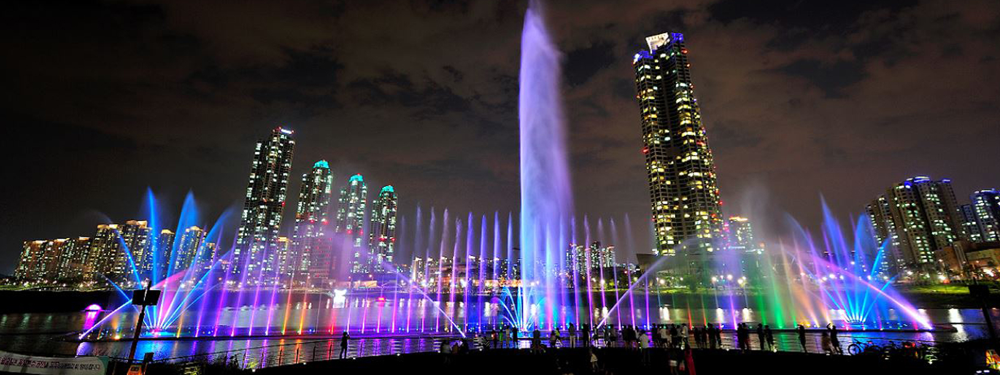
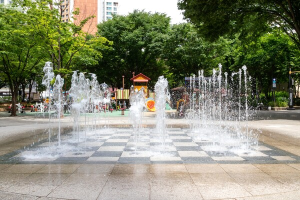

음악분수
스피커에서 흘러나오는 음악의 리듬에 맞춰 웅장한 분수가 연출되는 환상적인 분수시스템입니다.

바닥분수
공원이나 광장의 바닥에 설치되어 시민들이 함께 참여할 수 있는 분수시스템입니다.

고사분수
높은 물기둥을 연출하여 랜드마크 역할을 수행하는 상징적인 분수입니다.

스피커에서 흘러나오는 음악의 리듬에 맞춰 웅장한 분수가 연출되는 환상적인 분수시스템입니다.

공원이나 광장의 바닥에 설치되어 시민들이 함께 참여할 수 있는 분수시스템입니다.
높은 물기둥을 연출하여 랜드마크 역할을 수행하는 상징적인 분수입니다.